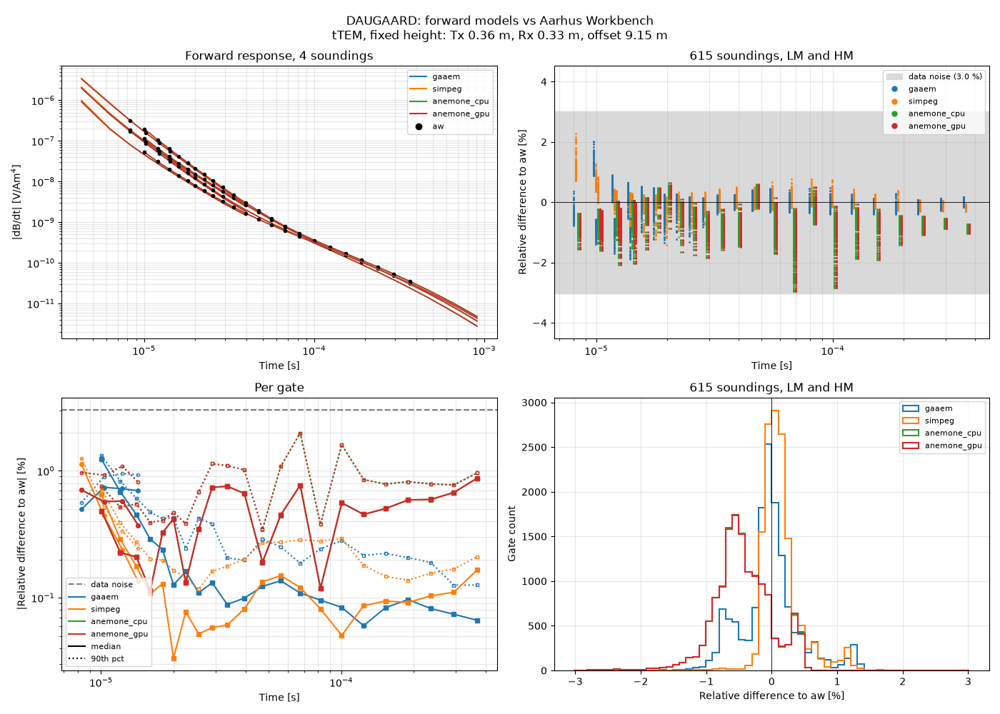
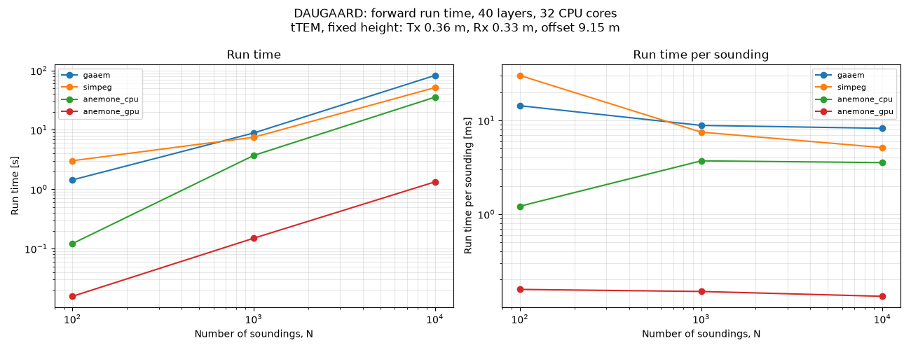

Note
Go to the end to download the full example code.
Validate the EM forward models against Aarhus Workbench (tTEM)¶
This example is for tTEM data, i.e. a towed, ground-based system with the transmitter and receiver at a fixed height above the ground, given by the GEX file (here Tx at 0.36 m, Rx at 0.33 m, 9.15 m behind the Tx). The prior therefore has no flight-height parameter, and all forward models use the height of the GEX file. Varying flight height, as for airborne systems such as SkyTEM, is not tested here.
The DAUGAARD case includes a deterministic (AarhusInv) inversion made in
Aarhus Workbench (here aw):
*_dat.xyz: the observed data used in the inversion*_inv.xyz: the inverted models*_syn.xyz: the forward response of the inverted models
This example uses the inverted models and their Workbench forward response
as reference. The inverted models are stored as prior realizations in
PRIOR_aw.h5, and the prior data are computed with ig.prior_data_em
for each of the EM forward models available in the current environment,
ga-aemsimpeganemoneon the CPUanemoneon a CUDA GPU
each stored in its own prior data file. The forward responses are then compared gate-by-gate to the Workbench response (accuracy), and the run time of each forward model is measured for an increasing number of soundings (efficiency). The run time of Workbench is not available.
import integrate as ig
hardcopy = True
import matplotlib.pyplot as plt
import numpy as np
import pandas as pd
import time
import libaarhusxyz
# Forward models to test, as (label, method, device). Those not available in
# the current environment are skipped.
forward_models = [('gaaem', 'ga-aem', 'cpu'),
('simpeg', 'simpeg', 'cpu'),
('anemone_cpu', 'anemone', 'cpu'),
('anemone_gpu', 'anemone', 'cuda')]
# Number of soundings in the run-time test. SimPEG takes about 0.3 s per
# sounding per core, so N=10000 takes a few minutes on a few cores.
N_time = [100, 1000, 10000]
def forward_available(method, device):
"""True if the forward model (and device) can be used in this environment."""
try:
if method == 'ga-aem':
from gatdaem1d import TDAEMSystem # noqa: F401
elif method == 'simpeg':
from integrate.simpeg_forward import _require_simpeg
_require_simpeg()
elif method == 'anemone':
from integrate.anemone_forward import _require_anemone
_, torch = _require_anemone()
if device == 'cuda' and not torch.cuda.is_available():
return False
except (ImportError, OSError):
return False
return True
forward_models = [fm for fm in forward_models if forward_available(fm[1], fm[2])]
if len(forward_models) == 0:
raise SystemExit('No EM forward model available; install ga-aem, simpeg or anemone')
print('Forward models available: %s' % ', '.join(fm[0] for fm in forward_models))
Forward models available: gaaem, simpeg, anemone_cpu, anemone_gpu
0. Get the DAUGAARD data¶
The GEX file, and the Workbench inversion: observed data (dat), inverted models (inv) and their forward response (syn).
case = 'DAUGAARD'
files = ig.get_case_data(case=case, showInfo=2)
f_data_h5 = files[0]
file_gex = ig.get_gex_file_from_data(f_data_h5)
file_xyz_dat = ig.get_case_data(case=case, filelist=['SCI7_40_ml_sharp2_I02_MOD_dat.xyz'])[0]
file_xyz_inv = ig.get_case_data(case=case, filelist=['SCI7_40_ml_sharp2_I02_MOD_inv.xyz'])[0]
file_xyz_syn = ig.get_case_data(case=case, filelist=['SCI7_40_ml_sharp2_I02_MOD_syn.xyz'])[0]
print("Using GEX file: %s" % file_gex)
print("Using Workbench observed data: %s" % file_xyz_dat)
print("Using Workbench inverted models: %s" % file_xyz_inv)
print("Using Workbench forward response: %s" % file_xyz_syn)
Getting data for case: DAUGAARD
Downloading DAUGAARD: 0%| | 0/4 [00:00<?, ?it/s]File DAUGAARD_AVG.h5 already exists. Skipping download.
File TX07_20231016_2x4_RC20-33.gex already exists. Skipping download.
File daugaard_12boreholes.json already exists. Skipping download.
File README_DAUGAARD already exists. Skipping download.
Downloading DAUGAARD: 100%|██████████| 4/4 [00:00<00:00, 71697.50it/s]
--> Got data for case: DAUGAARD
Getting data for case: DAUGAARD
Downloading DAUGAARD: 0%| | 0/1 [00:00<?, ?it/s]Downloaded SCI7_40_ml_sharp2_I02_MOD_dat.xyz
Downloading DAUGAARD: 100%|██████████| 1/1 [00:05<00:00, 5.68s/it]
Downloading DAUGAARD: 100%|██████████| 1/1 [00:05<00:00, 5.68s/it]
--> Got data for case: DAUGAARD
Getting data for case: DAUGAARD
Downloading DAUGAARD: 0%| | 0/1 [00:00<?, ?it/s]Downloaded SCI7_40_ml_sharp2_I02_MOD_inv.xyz
Downloading DAUGAARD: 100%|██████████| 1/1 [00:09<00:00, 9.58s/it]
Downloading DAUGAARD: 100%|██████████| 1/1 [00:09<00:00, 9.58s/it]
--> Got data for case: DAUGAARD
Getting data for case: DAUGAARD
Downloading DAUGAARD: 0%| | 0/1 [00:00<?, ?it/s]Downloaded SCI7_40_ml_sharp2_I02_MOD_syn.xyz
Downloading DAUGAARD: 100%|██████████| 1/1 [00:02<00:00, 2.48s/it]
Downloading DAUGAARD: 100%|██████████| 1/1 [00:02<00:00, 2.48s/it]
--> Got data for case: DAUGAARD
Using GEX file: TX07_20231016_2x4_RC20-33.gex
Using Workbench observed data: SCI7_40_ml_sharp2_I02_MOD_dat.xyz
Using Workbench inverted models: SCI7_40_ml_sharp2_I02_MOD_inv.xyz
Using Workbench forward response: SCI7_40_ml_sharp2_I02_MOD_syn.xyz
1. Observed data and the Workbench forward response¶
ig.xyz_to_h5 maps the Workbench gates onto the gates of the GEX file,
i.e. the gates [LM | HM] that the forward models return. The Workbench
inversion covers several survey days, processed with different GEX files;
only the soundings whose gate times match this GEX file (2023-11-09) are
kept. Gates Workbench did not use are NaN.
f_data_obs_h5 = ig.xyz_to_h5(file_xyz_dat, file_gex, f_data_h5='DATA_aw_obs.h5')
f_data_aw_h5 = ig.xyz_to_h5(file_xyz_syn, file_gex, f_data_h5='DATA_aw.h5')
DATA_obs = ig.load_data(f_data_obs_h5)
D_obs = DATA_obs['d_obs'][0]
D_obs_std = DATA_obs['d_std'][0]
D_aw = ig.load_data(f_data_aw_h5)['d_obs'][0]
X, Y, LINE, ELEVATION = ig.get_geometry(f_data_aw_h5)
nd = D_aw.shape[0]
# Gate centre times of the used GEX gates, i.e. the columns of the data
system = ig.gex_to_em_system(file_gex)
t_lm = system['moments'][0]['gate_centre']
t_hm = system['moments'][1]['gate_centre']
t_gate = np.r_[t_lm, t_hm]
is_hm = np.r_[np.zeros(t_lm.size, dtype=bool), np.ones(t_hm.size, dtype=bool)]
# tTEM: fixed Tx/Rx height from the GEX file, used by all forward models
tx_z = system['tx_z']
rx_z = system['tx_z'] - system['rx_dz']
rx_x = abs(system['rx_xy'][0])
system_label = 'tTEM, fixed height: Tx %4.2f m, Rx %4.2f m, offset %4.2f m' % (tx_z, rx_z, rx_x)
print(system_label)
rel_obs = (D_aw - D_obs) / D_obs
print('%d soundings, %d gates, %d used by Workbench' % (nd, len(t_gate), np.sum(~np.isnan(D_aw))))
print('Workbench response vs observed data: median |rel diff| = %4.2f %%, median rel std = %4.2f %%'
% (100 * np.nanmedian(np.abs(rel_obs)), 100 * np.nanmedian(D_obs_std / np.abs(D_obs))))
Converting XYZ to HDF5: SCI7_40_ml_sharp2_I02_MOD_dat.xyz → DATA_aw_obs.h5
Inversion-node XYZ: 11465 soundings, 10850 with gate times not matching the GEX (set to NaN)
Data has 615 stations and 40 channels
Adding group DATA_aw_obs.h5:D1
Converting XYZ to HDF5: SCI7_40_ml_sharp2_I02_MOD_syn.xyz → DATA_aw.h5
Inversion-node XYZ: 11465 soundings, 10850 with gate times not matching the GEX (set to NaN)
Data has 615 stations and 40 channels
Adding group DATA_aw.h5:D1
Loading data from DATA_aw_obs.h5. Using data types: [1]
- D1: id_prior=1, gaussian, Using 615/40 data
Loading data from DATA_aw.h5. Using data types: [1]
- D1: id_prior=1, gaussian, Using 615/40 data
tTEM, fixed height: Tx 0.36 m, Rx 0.33 m, offset 9.15 m
615 soundings, 40 gates, 14086 used by Workbench
Workbench response vs observed data: median |rel diff| = 0.93 %, median rel std = 3.02 %
2. Store the inverted models as prior realizations¶
The inverted models are matched to the soundings of the data by line and
position (in order of occurrence, as a few soundings share a position),
and saved as M1 in PRIOR_aw.h5, with the depth to the top of each
layer as x.
inv = libaarhusxyz.XYZ(file_xyz_inv)
rho_inv = inv.layer_data['rho'].values.astype(float) # (n_inv, n_layer)
z_inv = inv.layer_data['dep_top'].values.astype(float)[0]
def sounding_key(line, x, y):
"""(line, x, y, occurrence) of each sounding."""
df = pd.DataFrame({'line': np.round(line).astype(int), 'x': np.round(x, 2), 'y': np.round(y, 2)})
df['n'] = df.groupby(['line', 'x', 'y']).cumcount()
return pd.MultiIndex.from_frame(df)
i_inv = pd.Series(np.arange(len(rho_inv)),
index=sounding_key(inv.flightlines['line_no'].values,
inv.flightlines['utmx'].values,
inv.flightlines['utmy'].values)
).reindex(sounding_key(LINE, X, Y)).values
if np.any(np.isnan(i_inv)):
raise ValueError('%d soundings have no inverted model' % np.sum(np.isnan(i_inv)))
M_aw = rho_inv[i_inv.astype(int)]
print('Inverted models: %d soundings, %d layers, depth 0-%g m' % (M_aw.shape[0], M_aw.shape[1], z_inv[-1]))
f_prior_h5 = 'PRIOR_aw.h5'
ig.save_prior_model(f_prior_h5, M_aw, im=1, x=z_inv, name='Resistivity', unit='Ohm.m',
delete_if_exist=True)
Inverted models: 615 soundings, 40 layers, depth 0-99.999 m
1
3. Forward the inverted models¶
ig.prior_data_em computes the prior data of PRIOR_aw.h5 with each
forward model, in its own prior data file PRIOR_DATA_aw_<label>.h5.
D_fwd = {}
for label, method, device in forward_models:
f_prior_data_h5 = 'PRIOR_DATA_aw_%s.h5' % label
t0 = time.time()
ig.prior_data_em(f_prior_h5, file_gex, method=method, device=device,
doMakePriorCopy=True, f_prior_data_h5=f_prior_data_h5,
force_replace=True, showInfo=0)
D_fwd[label] = ig.load_prior_data(f_prior_data_h5, id_use=[1], showInfo=0)[0][0]
print('%-12s %d soundings: %6.1f s -> %s' % (label, nd, time.time() - t0, f_prior_data_h5))
prior_data_gaaem: Using 32 parallel threads.
prior_data_gaaem: Time= 5.5s/615 soundings. 8.9ms/sounding, 112.5it/s
gaaem 615 soundings: 5.6 s -> PRIOR_DATA_aw_gaaem.h5
simpeg: 0%| | 0/615 [00:00<?, ?it/s]
simpeg: 31%|███ | 191/615 [00:01<00:02, 162.48it/s]
simpeg: 67%|██████▋ | 412/615 [00:02<00:01, 194.48it/s]
simpeg: 100%|█████████▉| 614/615 [00:03<00:00, 197.65it/s]
prior_data_simpeg: Time= 5.4s/615 soundings. 8.8ms/sounding, 113.1it/s
simpeg 615 soundings: 5.5 s -> PRIOR_DATA_aw_simpeg.h5
anemone: 0%| | 0/615 [00:00<?, ?it/s]
anemone: 100%|██████████| 615/615 [00:02<00:00, 224.84it/s]
prior_data_anemone[cpu]: Time= 2.7s/615 soundings. 4.5ms/sounding, 224.3it/s
anemone_cpu 615 soundings: 2.8 s -> PRIOR_DATA_aw_anemone_cpu.h5
anemone: 0%| | 0/615 [00:00<?, ?it/s]
anemone: 100%|██████████| 615/615 [00:01<00:00, 509.02it/s]
prior_data_anemone[gpu]: Time= 1.2s/615 soundings. 2.0ms/sounding, 506.6it/s
anemone_gpu 615 soundings: 1.3 s -> PRIOR_DATA_aw_anemone_gpu.h5
4. Accuracy relative to Workbench¶
Relative difference to Workbench, (forward - aw) / aw, for every gate Workbench used.
rel = {label: (D_ - D_aw) / D_aw for label, D_ in D_fwd.items()}
use = ~np.isnan(D_aw)
rel_std = np.nanmedian(D_obs_std / np.abs(D_obs)) # typical relative data noise
print('|rel diff| to Workbench (%d soundings):' % nd)
print('%-12s %-3s %6s %9s %9s %9s' % ('model', '', 'n', 'median', '90th pct', 'max'))
for label in rel:
for mom, m_ in (('LM', ~is_hm), ('HM', is_hm)):
r_ = np.abs(rel[label][:, m_][use[:, m_]])
print('%-12s %-3s %6d %7.2f %% %7.2f %% %7.2f %%'
% (label, mom, r_.size, 100 * np.median(r_), 100 * np.percentile(r_, 90), 100 * r_.max()))
|rel diff| to Workbench (615 soundings):
model n median 90th pct max
gaaem LM 2424 0.68 % 0.88 % 1.89 %
gaaem HM 11662 0.14 % 0.63 % 2.01 %
simpeg LM 2424 0.34 % 1.15 % 2.29 %
simpeg HM 11662 0.11 % 0.31 % 1.41 %
anemone_cpu LM 2424 0.58 % 0.96 % 2.08 %
anemone_cpu HM 11662 0.45 % 0.91 % 2.97 %
anemone_gpu LM 2424 0.58 % 0.96 % 2.08 %
anemone_gpu HM 11662 0.45 % 0.91 % 2.97 %
Top left: forward responses of a few soundings, with Workbench as black dots. Top right: relative difference to Workbench for every gate, with the median relative noise of the observed data as grey band. Bottom left: median and 90th percentile of the absolute relative difference per gate, LM (circles) and HM (squares). Bottom right: distribution of the relative difference.
fig, axs = plt.subplots(2, 2, figsize=(14, 10))
ax = axs[0, 0]
for i in np.linspace(0, nd - 1, 4).astype(int):
for c_, label in enumerate(D_fwd):
for m_ in (~is_hm, is_hm):
ax.loglog(t_gate[m_], np.abs(D_fwd[label][i, m_]), '-', color='C%d' % c_, lw=1)
ax.loglog(t_gate[use[i]], np.abs(D_aw[i, use[i]]), 'ok', ms=3)
for c_, label in enumerate(D_fwd):
ax.plot([], [], '-', color='C%d' % c_, label=label)
ax.plot([], [], 'ok', label='aw')
ax.set_xlabel('Time [s]')
ax.set_ylabel('|dB/dt| [V/Am$^4$]')
ax.set_title('Forward response, 4 soundings')
ax.legend(fontsize=8)
ax.grid(True, which='both', alpha=0.3)
ax = axs[0, 1]
ax.axhspan(-100 * rel_std, 100 * rel_std, color='0.85', label='data noise (%3.1f %%)' % (100 * rel_std))
T = np.broadcast_to(t_gate, D_aw.shape)
for c_, label in enumerate(rel):
ax.semilogx(T[use] * (1 + 0.02 * (c_ - 1.5)), 100 * rel[label][use], '.', ms=2,
color='C%d' % c_, label=label)
ax.axhline(0, color='k', lw=0.6)
ax.set_ylim(-1.5 * 100 * rel_std, 1.5 * 100 * rel_std)
ax.set_xlabel('Time [s]')
ax.set_ylabel('Relative difference to aw [%]')
ax.set_title('%d soundings, LM and HM' % nd)
ax.legend(fontsize=8, markerscale=5)
ax.grid(True, which='both', alpha=0.3)
ax = axs[1, 0]
ax.axhline(100 * rel_std, color='0.5', ls='--', label='data noise')
for c_, label in enumerate(rel):
r_ = np.where(use, np.abs(rel[label]), np.nan)
for m_, mk in ((~is_hm & use.any(axis=0), 'o'), (is_hm & use.any(axis=0), 's')):
ax.loglog(t_gate[m_], 100 * np.nanmedian(r_[:, m_], axis=0), '-' + mk, color='C%d' % c_, ms=4)
ax.loglog(t_gate[m_], 100 * np.nanpercentile(r_[:, m_], 90, axis=0), ':' + mk, color='C%d' % c_,
ms=3, mfc='none')
ax.plot([], [], '-', color='C%d' % c_, label=label)
ax.plot([], [], '-k', label='median')
ax.plot([], [], ':k', label='90th pct')
ax.set_xlabel('Time [s]')
ax.set_ylabel('|Relative difference to aw| [%]')
ax.set_title('Per gate')
ax.legend(fontsize=8)
ax.grid(True, which='both', alpha=0.3)
ax = axs[1, 1]
bins = np.linspace(-100 * rel_std, 100 * rel_std, 61)
for c_, label in enumerate(rel):
ax.hist(100 * rel[label][use], bins=bins, histtype='step', lw=1.5, color='C%d' % c_, label=label)
ax.axvline(0, color='k', lw=0.6)
ax.set_xlabel('Relative difference to aw [%]')
ax.set_ylabel('Gate count')
ax.set_title('%d soundings, LM and HM' % nd)
ax.legend(fontsize=8)
ax.grid(True, alpha=0.3)
fig.suptitle('%s: forward models vs Aarhus Workbench\n%s' % (case, system_label))
fig.tight_layout()
if hardcopy:
fig.savefig('%s_forward_validation_accuracy.png' % case, dpi=140)
plt.show()

5. Computational efficiency¶
The inverted models are repeated to N soundings, stored in
PRIOR_aw_N<N>.h5, and forwarded with each forward model. The run time
includes the setup of GA-AEM (worker pool) and SimPEG (filter
coefficients) on every call, which dominates for small N. anemone keeps its
setup between calls, so after section 3 its run time is the forward alone.
import os
n_cpu = os.cpu_count()
print('CPU cores: %d' % n_cpu)
for label, method, device in forward_models:
if device == 'cuda':
import torch
print('GPU: %s' % torch.cuda.get_device_name(0))
break
t_run = {label: [] for label, _, _ in forward_models}
for N in N_time:
f_prior_N_h5 = 'PRIOR_aw_N%d.h5' % N
ig.save_prior_model(f_prior_N_h5, np.resize(M_aw, (N, M_aw.shape[1])), im=1, x=z_inv,
name='Resistivity', unit='Ohm.m', delete_if_exist=True)
for id_, (label, method, device) in enumerate(forward_models, start=1):
t0 = time.time()
ig.prior_data_em(f_prior_N_h5, file_gex, method=method, device=device, id=id_,
doMakePriorCopy=False, force_replace=True, showInfo=0)
t_run[label].append(time.time() - t0)
print('N=%6d %-12s %8.1f s' % (N, label, t_run[label][-1]))
print('\nForward run time')
print('%-12s %-6s' % ('model', 'device') + ''.join('%14s' % ('N=%d' % N) for N in N_time))
for label, method, device in forward_models:
print('%-12s %-6s' % (label, device) + ''.join('%12.1f s' % t for t in t_run[label]))
print('\nForward time per sounding')
print('%-12s %-6s' % ('model', 'device') + ''.join('%14s' % ('N=%d' % N) for N in N_time))
for label, method, device in forward_models:
print('%-12s %-6s' % (label, device)
+ ''.join('%11.3f ms' % (1000 * t / N) for t, N in zip(t_run[label], N_time)))
CPU cores: 32
GPU: NVIDIA GeForce RTX 4090
prior_data_gaaem: Using 32 parallel threads.
prior_data_gaaem: Time= 1.4s/100 soundings. 14.3ms/sounding, 69.8it/s
N= 100 gaaem 1.4 s
simpeg: 0%| | 0/100 [00:00<?, ?it/s]
prior_data_simpeg: Time= 3.0s/100 soundings. 30.2ms/sounding, 33.2it/s
N= 100 simpeg 3.0 s
anemone: 0%| | 0/100 [00:00<?, ?it/s]
prior_data_anemone[cpu]: Time= 0.1s/100 soundings. 1.2ms/sounding, 837.3it/s
N= 100 anemone_cpu 0.1 s
anemone: 0%| | 0/100 [00:00<?, ?it/s]
prior_data_anemone[gpu]: Time= 0.0s/100 soundings. 0.1ms/sounding, 7039.1it/s
N= 100 anemone_gpu 0.0 s
prior_data_gaaem: Using 32 parallel threads.
prior_data_gaaem: Time= 8.8s/1000 soundings. 8.8ms/sounding, 113.1it/s
N= 1000 gaaem 8.8 s
simpeg: 0%| | 0/1000 [00:00<?, ?it/s]
simpeg: 15%|█▌ | 151/1000 [00:01<00:06, 129.30it/s]
simpeg: 34%|███▍ | 344/1000 [00:02<00:03, 164.27it/s]
simpeg: 56%|█████▌ | 557/1000 [00:03<00:02, 185.61it/s]
simpeg: 76%|███████▌ | 760/1000 [00:04<00:01, 192.26it/s]
simpeg: 96%|█████████▌| 962/1000 [00:05<00:00, 195.62it/s]
prior_data_simpeg: Time= 7.5s/1000 soundings. 7.5ms/sounding, 133.4it/s
N= 1000 simpeg 7.5 s
anemone: 0%| | 0/1000 [00:00<?, ?it/s]
anemone: 100%|██████████| 1000/1000 [00:03<00:00, 271.08it/s]
prior_data_anemone[cpu]: Time= 3.7s/1000 soundings. 3.7ms/sounding, 270.3it/s
N= 1000 anemone_cpu 3.7 s
anemone: 0%| | 0/1000 [00:00<?, ?it/s]
prior_data_anemone[gpu]: Time= 0.1s/1000 soundings. 0.1ms/sounding, 6809.8it/s
N= 1000 anemone_gpu 0.1 s
prior_data_gaaem: Using 32 parallel threads.
prior_data_gaaem: Time= 82.3s/10000 soundings. 8.2ms/sounding, 121.5it/s
N= 10000 gaaem 82.3 s
simpeg: 0%| | 0/10000 [00:00<?, ?it/s]
simpeg: 2%|▏ | 158/10000 [00:01<01:10, 139.54it/s]
simpeg: 4%|▎ | 352/10000 [00:02<00:56, 169.82it/s]
simpeg: 6%|▌ | 570/10000 [00:03<00:49, 191.10it/s]
simpeg: 8%|▊ | 767/10000 [00:04<00:47, 193.31it/s]
simpeg: 10%|▉ | 974/10000 [00:05<00:45, 198.12it/s]
simpeg: 12%|█▏ | 1180/10000 [00:06<00:43, 200.71it/s]
simpeg: 14%|█▍ | 1387/10000 [00:07<00:42, 202.69it/s]
simpeg: 16%|█▋ | 1639/10000 [00:08<00:40, 205.24it/s]
simpeg: 19%|█▊ | 1872/10000 [00:09<00:40, 201.44it/s]
simpeg: 21%|██ | 2089/10000 [00:10<00:38, 205.85it/s]
simpeg: 23%|██▎ | 2331/10000 [00:11<00:37, 204.41it/s]
simpeg: 25%|██▌ | 2536/10000 [00:12<00:36, 204.52it/s]
simpeg: 27%|██▋ | 2745/10000 [00:13<00:35, 205.75it/s]
simpeg: 30%|██▉ | 2995/10000 [00:14<00:33, 206.54it/s]
simpeg: 32%|███▏ | 3239/10000 [00:16<00:32, 205.43it/s]
simpeg: 34%|███▍ | 3446/10000 [00:17<00:31, 205.82it/s]
simpeg: 37%|███▋ | 3699/10000 [00:18<00:30, 207.33it/s]
simpeg: 39%|███▉ | 3946/10000 [00:19<00:29, 206.82it/s]
simpeg: 42%|████▏ | 4188/10000 [00:20<00:28, 205.16it/s]
simpeg: 44%|████▍ | 4402/10000 [00:21<00:26, 207.46it/s]
simpeg: 46%|████▋ | 4647/10000 [00:22<00:25, 206.38it/s]
simpeg: 49%|████▊ | 4855/10000 [00:23<00:24, 206.73it/s]
simpeg: 51%|█████ | 5103/10000 [00:25<00:23, 206.66it/s]
simpeg: 53%|█████▎ | 5312/10000 [00:26<00:22, 207.24it/s]
simpeg: 56%|█████▌ | 5566/10000 [00:27<00:21, 208.57it/s]
simpeg: 58%|█████▊ | 5809/10000 [00:28<00:20, 206.61it/s]
simpeg: 60%|██████ | 6017/10000 [00:29<00:19, 206.91it/s]
simpeg: 63%|██████▎ | 6267/10000 [00:30<00:18, 207.27it/s]
simpeg: 65%|██████▍ | 6475/10000 [00:31<00:16, 207.43it/s]
simpeg: 67%|██████▋ | 6683/10000 [00:32<00:15, 207.45it/s]
simpeg: 69%|██████▉ | 6892/10000 [00:33<00:14, 207.85it/s]
simpeg: 71%|███████ | 7100/10000 [00:34<00:13, 207.85it/s]
simpeg: 73%|███████▎ | 7342/10000 [00:35<00:12, 205.72it/s]
simpeg: 76%|███████▌ | 7558/10000 [00:36<00:11, 208.57it/s]
simpeg: 78%|███████▊ | 7804/10000 [00:38<00:10, 207.33it/s]
simpeg: 80%|████████ | 8012/10000 [00:39<00:09, 207.42it/s]
simpeg: 82%|████████▏ | 8220/10000 [00:40<00:08, 207.54it/s]
simpeg: 84%|████████▍ | 8428/10000 [00:41<00:07, 207.58it/s]
simpeg: 86%|████████▋ | 8637/10000 [00:42<00:06, 207.90it/s]
simpeg: 88%|████████▊ | 8845/10000 [00:43<00:05, 207.88it/s]
simpeg: 91%|█████████ | 9098/10000 [00:44<00:04, 208.77it/s]
simpeg: 93%|█████████▎| 9343/10000 [00:45<00:03, 207.20it/s]
simpeg: 96%|█████████▌| 9555/10000 [00:46<00:02, 208.49it/s]
simpeg: 98%|█████████▊| 9806/10000 [00:47<00:00, 208.60it/s]
prior_data_simpeg: Time= 51.3s/10000 soundings. 5.1ms/sounding, 194.9it/s
N= 10000 simpeg 51.3 s
anemone: 0%| | 0/10000 [00:00<?, ?it/s]
anemone: 10%|█ | 1000/10000 [00:03<00:30, 290.78it/s]
anemone: 20%|██ | 2000/10000 [00:06<00:27, 292.40it/s]
anemone: 30%|███ | 3000/10000 [00:10<00:24, 284.97it/s]
anemone: 40%|████ | 4000/10000 [00:13<00:20, 285.90it/s]
anemone: 50%|█████ | 5000/10000 [00:17<00:17, 283.37it/s]
anemone: 60%|██████ | 6000/10000 [00:21<00:14, 279.81it/s]
anemone: 70%|███████ | 7000/10000 [00:24<00:10, 278.34it/s]
anemone: 80%|████████ | 8000/10000 [00:28<00:07, 284.76it/s]
anemone: 90%|█████████ | 9000/10000 [00:31<00:03, 283.74it/s]
anemone: 100%|██████████| 10000/10000 [00:35<00:00, 279.62it/s]
prior_data_anemone[cpu]: Time= 35.5s/10000 soundings. 3.5ms/sounding, 282.0it/s
N= 10000 anemone_cpu 35.5 s
anemone: 0%| | 0/10000 [00:00<?, ?it/s]
anemone: 80%|████████ | 8000/10000 [00:01<00:00, 7859.51it/s]
prior_data_anemone[gpu]: Time= 1.3s/10000 soundings. 0.1ms/sounding, 7570.3it/s
N= 10000 anemone_gpu 1.3 s
Forward run time
model device N=100 N=1000 N=10000
gaaem cpu 1.4 s 8.8 s 82.3 s
simpeg cpu 3.0 s 7.5 s 51.3 s
anemone_cpu cpu 0.1 s 3.7 s 35.5 s
anemone_gpu cuda 0.0 s 0.1 s 1.3 s
Forward time per sounding
model device N=100 N=1000 N=10000
gaaem cpu 14.350 ms 8.847 ms 8.234 ms
simpeg cpu 30.187 ms 7.501 ms 5.131 ms
anemone_cpu cpu 1.214 ms 3.702 ms 3.546 ms
anemone_gpu cuda 0.157 ms 0.149 ms 0.133 ms
Left: run time against the number of soundings. Right: run time per sounding; for large N this approaches the cost of the forward itself.
fig, axs = plt.subplots(1, 2, figsize=(13, 5))
for c_, label in enumerate(t_run):
t_ = np.array(t_run[label])
axs[0].loglog(N_time, t_, '-o', color='C%d' % c_, label=label)
axs[1].loglog(N_time, 1000 * t_ / np.array(N_time), '-o', color='C%d' % c_, label=label)
axs[0].set_ylabel('Run time [s]')
axs[0].set_title('Run time')
axs[1].set_ylabel('Run time per sounding [ms]')
axs[1].set_title('Run time per sounding')
for ax in axs:
ax.set_xlabel('Number of soundings, N')
ax.legend(fontsize=8)
ax.grid(True, which='both', alpha=0.3)
fig.suptitle('%s: forward run time, %d layers, %d CPU cores\n%s' % (case, M_aw.shape[1], n_cpu, system_label))
fig.tight_layout()
if hardcopy:
fig.savefig('%s_forward_validation_runtime.png' % case, dpi=140)
plt.show()

Total running time of the script: (3 minutes 53.385 seconds)